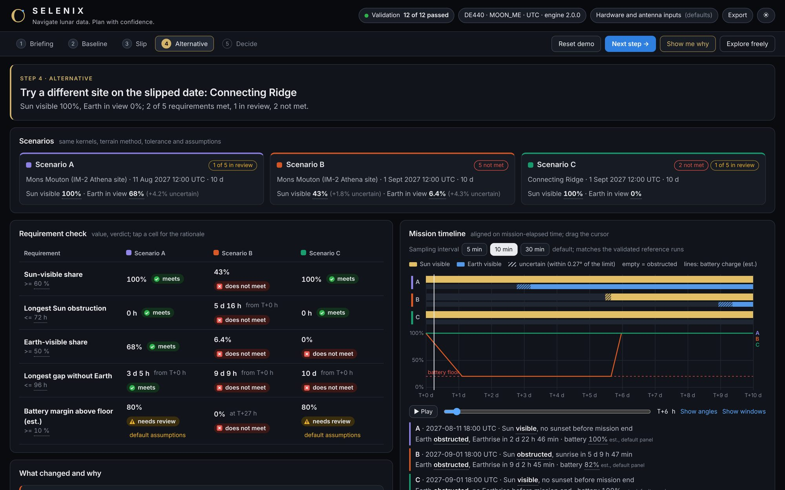
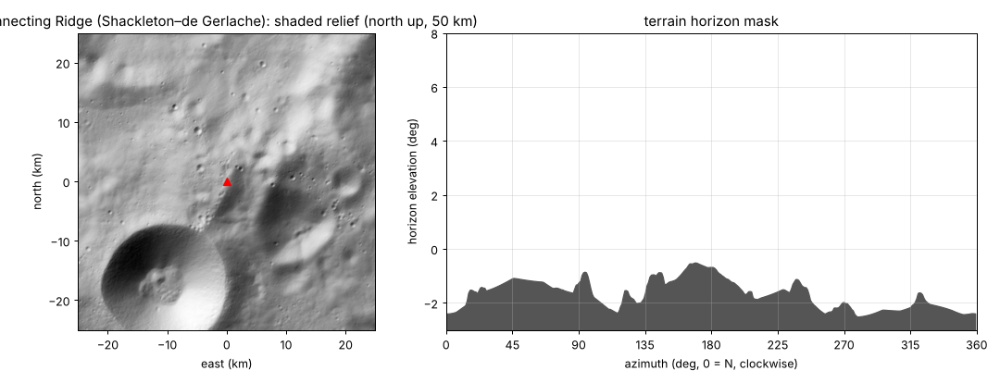

How the platform works: problem, method, pipelines and datasets, validation, differentiation, usage and future prospects.
SELENIX team: Ishan Singh, Aisha Jawad
Document date 15 November 2026 · engine selenix-engine 2.0.0 · data build 2026-11-15
Prototype for decision support. Not a flight-readiness, landing-safety or mission-feasibility certification.
SELENIX is a browser-based decision-support tool for lunar south-pole mission planners who are not specialists in celestial mechanics. It answers one recurring planning question quickly and traceably: if the landing date or site changes, what happens to Sun and Earth visibility over the mission, and does the plan still meet its requirements?
It combines NASA NAIF SPICE geometry (DE440), terrain horizons derived from LRO LOLA elevation models and a transparent rule layer. It compares up to three site/date scenarios on a mission-elapsed-time axis and checks each against stated requirements with an explicit proof. Every displayed number opens its evidence: inputs, data versions, method, tolerance, limitations and validation status.
The demonstration follows a lander whose launch slips 21 days. At Mons Mouton (IM-2 Athena site) on 11 Aug 2027 the Sun is visible 100% of the mission and Earth 68%: all four visibility requirements are met. Three weeks later the same site gives 43% and 6.4%, the lander arrives in darkness, and all five requirements fail. Moving to Connecting Ridge restores the Sun (100%) but removes direct-to-Earth geometry (0%). SELENIX states that trade-off. It does not pick a winner.
At the lunar south pole the Sun stays near the horizon all year: at 90°S its elevation never exceeds about 1.59°. Earth wanders within about ±7° with libration. Under these conditions, terrain kilometres away decides whether a lander sees the Sun or Earth, and a few weeks' change in landing date can move both bodies behind ridges for days.
Three levels of knowledge must be connected for a planning decision:
| Level | Question | Typical tool today |
|---|---|---|
| Celestial geometry | Where are the Sun and Earth relative to the site? | SPICE, JPL Horizons |
| Terrain visibility | Does local terrain block them? | DEM horizon or viewshed analysis |
| Operational meaning | What does that do to power, darkness survival and communications? | A specialist, by hand |
The data exists: SPICE kernels, LOLA topography, published illumination maps, Horizons, and viewers such as LROC QuickMap and NASA Moon Trek. What planners lack is a fast, consistent way to reassess a site and date when inputs change, and to see why the answer changed. Repeating that by hand across tools is slow and error-prone. Mixed frames, time standards and azimuth conventions produce plausible but wrong numbers.
| Capability | What the planner gets |
|---|---|
| Site evaluation | Curated south-pole sites with cited coordinates, LOLA elevation, published long-term illumination and Earth visibility, and terrain status. |
| Sun and Earth visibility | Per-sample state (visible, uncertain, obstructed) against the LOLA terrain horizon; Earth also against a minimum antenna elevation. |
| Windows and worst cases | Every visibility window with start, end and duration refined to the minute; longest interruptions with when they start. |
| Scenario comparison | Up to three scenarios on a mission-elapsed-time axis, a three-line difference (what changed, effect, verdicts) and a trade-off table. |
| Requirement checks | meets / needs review / does not meet / unknown, with the reason for review and the driver of each failure. |
| Mission log | Plain-language, rule-based entries such as “Land in darkness: the Sun stays hidden until T+5 d 16 h.” No free-text AI. |
| Power estimate | A transparent panel and battery estimate, always labelled as an engineering estimate on user assumptions. |
| Date sweep | A precomputed grid of sites against landing dates to spot windows worth a closer look. |
| Evidence and export | Every number opens its evidence; per-sample and window CSV; comparison JSON with indicator records and proofs. |
Intended users: lunar mission planners and mission designers first; systems, power and communications engineers second. The interface is simple by default, with technical detail one click away.
Open dist/app/index.html in any modern browser, or the deployed site. There is nothing to install and it works offline. The landing page is dist/index.html.
Controls are always visible: Reset demo, Next step (or the right-arrow key) and Show me why, which opens the evidence for the number that changed most. Explore freely switches to the editable workspace.

Heavy, data-intensive steps run offline in Python. Their outputs are small static files that the browser engine reads. A build step inlines data, engine and interface into a single HTML file, so a demonstration cannot fail because a server is down.
| Component | File | Responsibility |
|---|---|---|
| SPICE geometry adapter | precompute/adapters.py | Kernel loading, time conversion, Sun/Earth vectors in MOON_ME |
| Ephemeris table | precompute/make_ephemeris.py | Hourly vectors 2026–2030 → data/ephemeris.bin |
| Horizon masks | precompute/horizon_mask.py | LOLA DEM ray marching → horizon_<site>.json |
| Map layers | precompute/pole_map.py | Shaded relief and published illumination/Earth layers |
| Benchmark | precompute/benchmark_illumination.py | Comparison with NASA PGDA maps |
| Horizons check | precompute/horizons_check.py | Independent geometry check via the JPL API |
| Validation | precompute/validate.py | 12 checks → data/validation.json; reference runs |
| Date sweep | precompute/make_sweep.js | Static grid computed with the browser engine |
| Engine | src/engine.js | Adapters, classifier, metrics, windows, proofs, records, rules (no DOM) |
| Interface | src/app.js, src/styles.css | Guided demonstration, workspace, evidence drawer |
| Build | build.py | → dist/index.html (landing), dist/app/index.html (platform) |
| Tests | tests/regression.js | JS vs Python reference, classifier, proofs, store, schemas, refinement |
Technologies: Python 3 with NumPy, SpiceyPy (CSPICE N0067), Matplotlib and Pillow offline; plain JavaScript, HTML and CSS in the browser, with no framework or runtime dependency. Charts are drawn on HTML canvas and SVG. Tests run in Node.js and headless Chromium (Playwright). Deployment is static (Vercel or GitHub Pages).
| Source | Version | Class | Location |
|---|---|---|---|
| LRO LOLA polar gridded DEMs LDEM_85S_40M, LDEM_80S_80M, LDEM_75S_120M | PDS3 V2.0 (2017-06-15) | measured | imbrium.mit.edu/DATA/LOLA_GDR/POLAR/IMG/ |
| NASA GSFC PGDA product 69: LOLA average solar illumination and Earth visibility maps (Mazarico et al. 2011, Icarus 211; 2016 update) | AVGVISIB_85S_060M_201608, AVGVISIB_75S_120M_201608 | measured | pgda.gsfc.nasa.gov/products/69 |
| NAIF SPICE kernels: naif0012.tls, de440s.bsp, moon_pa_de440_200625.bpc, moon_de440_250416.tf, pck00011.tpc | CSPICE N0067 via spiceypy | computed-geometry | naif.jpl.nasa.gov/pub/naif/generic_kernels/ |
| JPL Horizons System (independent cross-check) | API 1.2, DE441 | computed-geometry | ssd.jpl.nasa.gov/horizons/ |
| LROC QuickMap (ASU): imagery and topography to inspect sites | web | measured | quickmap.lroc.im-ldi.com/ |
| NASA Moon Trek: 3-D terrain to inspect sites and horizons | web | measured | trek.nasa.gov/moon/ |
| Canadian Space Agency: Moon exploration (Artemis, Canadarm3, lunar rover) | web | demo-only | www.asc-csa.gc.ca/eng/astronomy/moon-exploration/ |
| Total solar irradiance 1361 W/m² (Kopp & Lean 2011) | GRL 38 | measured | doi.org/10.1029/2010GL045777 |
| ISRO Chandrayaan-3 landing site (Shiv Shakti point) | 2023 | measured | www.isro.gov.in/Chandrayaan3_Details.html |
| LROC: IM-2 Athena lander position (image 1408) | 2025 | measured | lroc.im-ldi.com/images/1408 |
naif0012.tls (leap seconds), de440s.bsp (planetary and lunar ephemeris, coverage 1849-12-25 to 2150-01-21), moon_pa_de440_200625.bpc (lunar orientation), moon_de440_250416.tf (MOON_ME frame), pck00011.tpc (constants). Physical libration is included through the lunar orientation kernel; no analytic Moon model is used.
Polar stereographic gridded DEMs from the PDS: LDEM_85S_40M, LDEM_80S_80M and LDEM_75S_120M (version 2.0, 2017). Heights are DN × 0.5 m relative to a 1737.4 km sphere. The projection (r = 2R·tan(π/4 + lat/2); sample = S₀ + r·sin λ / scale, line = L₀ − r·cos λ / scale) was verified on Shackleton crater and the Malapert massif.
NASA GSFC PGDA product 69 (Mazarico et al. 2011, updated 2016): average solar illumination and Earth visibility over 18.6 years, at 60 m (85°S) and 120 m (75°S). Used as an independent benchmark, to anchor ridge and rim site coordinates, and as map context layers. They are not used in the calculation itself.
| Site | Lat | Lon (E) | Elevation | Coordinates | Terrain | Published Sun / Earth |
|---|---|---|---|---|---|---|
| Mons Mouton (IM-2 Athena site) | -84.7906° | 29.1957° | 5322 m | verified | LOLA | 45.1% / 92.08% |
| Connecting Ridge | -89.4749° | -137.4431° | 1947 m | corrected | LOLA | 88.44% / 58.08% |
| Shackleton rim | -89.7843° | -155.9041° | 1736 m | corrected | LOLA | 85.46% / 56.68% |
| de Gerlache rim | -88.6646° | -68.3956° | 1815 m | corrected | LOLA | 82.69% / 61.42% |
| Malapert massif | -86.0011° | 2.0550° | 5155 m | corrected | LOLA | 81.89% / 58.7% |
| Shackleton crater floor (shadow reference) | -89.6700° | 129.7800° | -2789 m | verified | LOLA | 0% / 0% |
| Shiv Shakti point (Chandrayaan-3) | -69.3730° | 32.3190° | verified | unavailable | — | |
| Geographic south pole (90°S) | -90.0000° | 0.0000° | 1290 m | verified | LOLA | — |
Mons Mouton uses the IM-2 Athena position published by LROC. Connecting Ridge, Shackleton rim, de Gerlache rim and Malapert massif are local maxima of the published illumination map near the regions named by Mazarico et al. (2011). The Shiv Shakti point lies outside the polar DEMs used, so its terrain is unavailable by design.
Scenario inputs are a site, a landing instant in UTC and a duration. Samples are taken every 10 minutes by default (5 and 30 available), giving 1441 samples for a 10-day mission. Mission-elapsed time (MET) starts at T+0. The ephemeris table is indexed by UTC; TDB = UTC + 69.184 s throughout 2026–2030 because no leap second falls in the window (asserted at build time).
The SPICE adapter calls spkpos(target, et, 'MOON_ME', 'LT+S', 'MOON') for SUN and EARTH every hour. LT+S gives apparent directions, corrected for light time and stellar aberration. The browser linearly interpolates the table to each sample. The site position is r_site = (R + h)·û with R = 1737.4 km, h the LOLA elevation, and û the unit vector at planetocentric latitude φ and east longitude λ. The local basis is:
up = (cos φ cos λ, cos φ sin λ, sin φ) east = (−sin λ, cos λ, 0) north = (−sin φ cos λ, −sin φ sin λ, cos φ) v = r_body − r_site (Earth parallax included; negligible for the Sun) azimuth = atan2(v·east, v·north) 0° = north, clockwise elevation = atan2(v·up, √((v·east)² + (v·north)²))
For each site and each whole degree of azimuth, horizon_mask.py marches outward along the great circle to 200 km. The step starts at the DEM cell size and grows to 0.4% of the distance. At each point it uses the finest DEM covering it (bilinear interpolation) and computes the exact elevation angle on the sphere:
P = (R + z(d))·dir(d), S = (R + z₀ + h_obs)·up angle(d) = asin(((P − S)·up) / |P − S|) ≈ atan2(z − z₀ − d²/2R, d)
Each 1° value is the maximum over five sub-rays spanning ±0.5°, so a ridge narrower than the bin is not missed. Observer height is 2 m. Terrain closer than 120 m (three 40 m cells) is treated as the site itself: at grazing Sun angles, metre-scale relief there dominates ridge-crest horizons but is not resolved reliably and depends on lander placement. The 120 m value was chosen from the illumination benchmark (section 10). Masks are plotted beside shaded relief in docs/masks/ for inspection.

For each sample the engine computes the margin of each body above its limit: the terrain horizon at the body's azimuth (linear interpolation between degrees), and for Earth the higher of that and the minimum antenna elevation (2° by default). With tolerance τ = 0.27° (the Sun's angular radius):
margin > +τ → visible margin < −τ → obstructed otherwise → uncertain
When a site has no terrain data, every sample that would be visible becomes uncertain. Missing terrain is never treated as an unobstructed horizon.
Each metric is aggregated twice: conservative (uncertain counted as not visible) and optimistic (uncertain counted as visible). With terrain, the displayed value is the conservative one. Without terrain, the optimistic value is displayed and marked as an upper bound (≤ or ≥). Durations use sample accounting: sample k covers [k, k+1) steps, truncated at the mission end.
| Metric | Definition | Class |
|---|---|---|
| Sun visible | Share of samples classified visible: Sun centre elevation above the terrain horizon at its azimuth by more than the tolerance. | computed-geometry |
| Earth visible | Share of samples classified visible: Earth centre above max(terrain horizon, minimum antenna elevation) by more than the tolerance. | computed-geometry |
| Total Sun-visible duration | Number of visible samples times the sampling step. | computed-geometry |
| Total Earth-visible duration | Number of visible samples times the sampling step. | computed-geometry |
| Longest Sun obstruction | Longest run of consecutive samples in which the Sun is not classified visible, times the step. | computed-geometry |
| Longest Earth obstruction | Longest run of consecutive samples in which Earth is not classified visible, times the step. | computed-geometry |
| First sunset | From T+0, the first visible-to-not-visible Sun transition. Empty when none falls inside the mission. | computed-geometry |
| First sunrise | From T+0, the first not-visible-to-visible Sun transition. | computed-geometry |
| Mean Sun elevation while visible | Mean Sun centre elevation over visible samples. | computed-geometry |
| Maximum Sun elevation | Highest Sun centre elevation in the mission, regardless of terrain. | computed-geometry |
| Maximum Earth elevation | Highest Earth centre elevation in the mission, regardless of terrain. | computed-geometry |
| Shadow of a 1 m rock | 1 m / tan(mean Sun elevation while visible), on flat ground. | computed-geometry |
| Generated energy (estimate) | Sum of P(t) x step, P = A x eta x 1361 W/m2 x (1 AU/r)^2 x cos(theta) x sunVisible x (1 - losses), selected panel type. | engineering-estimate |
| Vertical vs horizontal array energy | Energy of a vertical Sun-tracking array (cos theta = cos el) divided by a horizontal one (cos theta = sin el), same area and efficiency. | engineering-estimate |
| Minimum battery charge (estimate) | Battery simulation: constant load, starts at the initial charge, charge clamped to capacity, discharge stops at the depth-of-discharge floor. | engineering-estimate |
| Battery margin above floor (estimate) | Minimum charge minus the depth-of-discharge floor (100% - DoD). Zero means the battery reached the floor. | engineering-estimate |
| Battery reaches floor (estimate) | First mission time at which the charge reaches capacity x (1 - DoD). | engineering-estimate |
| Storage for the longest Sun obstruction (estimate) | load x longest Sun obstruction / usable depth of discharge (rule of thumb). | engineering-estimate |
| Energy balance (estimate) | Generated energy minus load energy over the mission. | engineering-estimate |
Consecutive samples in the same state form a window. Each change of state lies between two samples. The engine bisects the interpolated geometry 16 times between them to find when the margin crosses the state boundary (+τ between visible and uncertain, −τ between uncertain and obstructed, 0 for a direct jump). Window times are reported to the minute; a regression test compares them with a 1-minute run (worst 0.59 min). Summary metrics stay sample-based, as the V1 specification requires.
P(t) = A · η · 1361 W/m² · (1 AU / r)² · max(0, cos θ) · visible(t) · (1 − losses) cos θ: horizontal = sin(el); vertical fixed = cos(el)·cos(az − φp); vertical tracking = cos(el)
The battery starts at the initial charge, is clamped to capacity, and stops discharging at the depth-of-discharge floor; the first time it reaches the floor is reported. Defaults: 2 m² vertical-tracking array, 28% efficiency, 10% losses, 150 W load, 5000 Wh battery, 80% usable depth of discharge. Dust, self-shadowing, temperature, degradation and heaters are not modelled. All power figures carry the engineering-estimate class.
The engine itself, run in Node, precomputes 7 sites × 36 landing dates every 3 days from 2027-07-03 for 10-day missions. The grid is static JSON, so it opens instantly. If duration, sampling, antenna elevation or terrain differ from the grid's inputs, the app recomputes live and says so.
Default thresholds follow the V0.2 change specification. They are user assumptions, editable in the app or in data/requirements.json.
| Requirement | Indicator | Threshold | Visibility | Power |
|---|---|---|---|---|
| Sun-visible share | sunlitPct | >= 60 % | yes | no |
| Longest Sun obstruction | longestDarkGapH | <= 72 h | yes | no |
| Earth-visible share | earthVisiblePct | >= 50 % | yes | no |
| Longest gap without Earth | longestNoEarthGapH | <= 96 h | yes | no |
| Battery margin above floor (est.) | socMarginPct | >= 10 % | yes | yes |
checkRequirement() returns a proof object with ordered checks:
Each proof records the observed value and when the worst case happens, both bounds, every step with its explanation, the indicator records it rests on and a driver sentence, e.g. “Longest Sun obstruction is 5 d 16 h from T+0 h; the requirement is <= 3 d.”.
Plain-language entries come from templates in data/rules.json. A template is filled with calculated values only when its condition holds; there is no free-text generation. Entries shared by every scenario are shown once, with per-scenario values.
| Rule | Title | Severity | Entry template |
|---|---|---|---|
| R5 | Terrain unavailable | warning | Treat every visibility figure here as an upper bound: terrain data is unavailable for this site. |
| R9 | Landing in darkness | critical | Land in darkness: the Sun stays hidden until {rise|met}. |
| R4 | Battery floor | critical | Battery reaches its floor at {t|met} (est.): shed load or carry more storage. |
| R8 | No direct-to-Earth geometry | critical | No direct-to-Earth geometry in this window: Earth never clears {minEl|deg}. Plan on a relay. |
| R2 | Communications gap | warning | Buffer data and run autonomously for up to {gap|h} without Earth in view. |
| R1 | Storage | info | Size storage for {gap|h} without Sun: about {wh|wh} usable at {load|w} (est.). |
| R11 | Grazing geometry | warning | Treat grazing hours as unconfirmed: Sun {su|pct}, Earth {eu|pct} of the mission sit within {tol|deg2} of the limit. |
| R10 | First sunset | info | Fit critical first-day work before the first sunset at {t|met}. |
| R3 | Panel orientation | info | Mount the array vertically: about {x|x1} the energy of a flat one (est.). |
| R7 | Long shadows | info | Expect long shadows: a 1 m rock casts about {len|m}. |
| R6 | Scenario difference | info | {A} to {B} |
For each consecutive pair of scenarios SELENIX states three things: what changed in the inputs, the largest effects on visibility (normalised by range), and which verdicts moved. Step 5 tabulates each option's visibility, unmet requirements and open engineering question. It ends on the trade-off, not a recommendation.
Traceability is built into the data model, not added as links at the end. Four record types are defined as JSON Schemas in schemas/ and checked by the test suite:
| Record | Produced by | Key contents |
|---|---|---|
| Adapter descriptor | adapter.describe() | Sources with file names and sizes, frame, time system, aberration correction, coverage window |
| Indicator record | indicatorRecord() | Value, unit, quality class and state, bounds, worst-case time, location and frame, time window, method and parameters, input identifiers, sources, limitations, validation references, scenario hash |
| Proof object | checkRequirement() | Statement, verdict, sub-state, observed value and timing, bounds, ordered checks, evidence ids, driver |
| Sample record | sampleRecord() | Per timestamp and body: azimuth, elevation, terrain horizon, visibility state, quality state, tolerance, versions (V1 specification 8.3) |
The lineage chain is: displayed indicator → indicator record → method and parameters → adapter descriptors → source products. The evidence drawer renders these records directly, with three templates: geometry-derived, model-derived and user input. Quality classes are measured, computed-geometry, engineering-estimate, user-assumption and demo-only; each value shows its class on hover.
Validation results ship with the product: a header chip shows them, and a failing check is shown in a banner, never hidden. Three checks rerun in the browser on load and on demand; the others need NASA data or network access and run when the data is built.
| Check | Result | Tolerance | Status |
|---|---|---|---|
| Sun elevation at 90°S | -1.59° to 1.59° over 2026-2030 | within ±1.7° (lunar obliquity 1.54°) | pass |
| Earth elevation at 90°S | -7.10° to 6.61° | within ±7.5° (libration in latitude plus parallax) | pass |
| Sub-Earth point (libration) | mean -0.07°, 0.02°; range ±8.05° lon, ±6.86° lat | mean within 0.5° of (0, 0); ranges 6-9° and 6-7.5° | pass |
| Azimuth convention (geometry) | a point placed due east reads 90.000° | within 0.01° of 90° | pass |
| Azimuth convention (DEM) | a synthetic wall due east appears at 94° (26.3° high); north, south, west stay at -0.0° | peak within 5° of 90° | pass |
| Terrain sanity (crater floor vs rim) | Shackleton floor horizon 19.8° to 23.6°; rim -2.6° to 1.0° | floor above 10°, rim below 5° | pass |
| Missing terrain is never 'visible' | Shiv Shakti point (Chandrayaan-3) has no terrain data: 0 of 1441 samples classified visible; the rest are uncertain or obstructed | 0 visible samples | pass |
| Site coordinates | 4 verified and 4 corrected against a cited source; none left to verify | every site verified or corrected with a citation | pass |
| SPICE kernel coverage | table 2026-01-01 to 2031-01-01 lies inside kernel coverage 1849-12-25 to 2150-01-21 | table window inside kernel coverage | pass |
| Independent check against JPL Horizons | 30 Sun and Earth azimuth/elevation comparisons (3 sites, 5 times including both demo dates); worst difference 0.00002° | under 0.001° | pass |
| Illumination benchmark (published LOLA maps) | 45 points against NASA PGDA average-illumination maps: Sun median difference 0.97 points (RMS 1.97, worst 5.82); Earth median 0.24 points (RMS 1.75, worst 7.4) | median under 1.5 points (Sun) and 1.0 (Earth); RMS under 3 points | pass |
| Browser engine against Python reference | 4 reference scenarios written; the browser re-runs them on load and node tests/regression.js checks them in CI | angles within 1e-9°, identical visibility states | pass |
Sun and Earth azimuth and elevation from our table were compared with JPL Horizons (observer on the lunar surface, MEAN_ME site coordinates, apparent airless positions) at 3 sites and 5 times, including both demonstration dates and an off-the-hour instant. The worst difference is 0.00002° against a 0.001° target. With geometric positions, an earlier version differed by about 0.006°; switching the adapter to LT+S closed that gap.
The published PGDA maps give, per 60 m pixel, the share of hourly timesteps over 18.6 years in which any part of the solar (or Earth) disc is visible. We computed the same quantity with our own pipeline at the same pixel centres: the curated sites plus a fixed-seed sample spread across the range of published values (45 points).

| Near field | Sun median |Δ| | Sun RMS | Sun worst | Earth median |Δ| | Earth RMS | Earth worst |
|---|---|---|---|---|---|---|
| 0 m | 1.78 | 9.94 | 37.38 | 0.3 | 3.39 | 11.58 |
| 120 m (used) | 0.97 | 1.97 | 5.82 | 0.24 | 1.75 | 7.4 |
| 300 m | 0.89 | 3.67 | 14.87 | 0.22 | 2.39 | 11.2 |
Differences are in percentage points. With rays starting one cell from the observer, ridge-crest pixels came out 10 to 40 points too dark. Excluding the nearest 120 m brings the median below one point. Remaining differences come from the DEM release and resolution (60 m published, 40 m ours), our conservative 1° bins, and the start of the 18.6-year window. Medians are sub-percent; individual points are not.
| Curated site | Published Sun | Ours | Published Earth | Ours |
|---|---|---|---|---|
| Mons Mouton (IM-2 Athena site) | 45.1% | 46.06% | 92.08% | 92.12% |
| Connecting Ridge | 88.44% | 87.39% | 58.08% | 57.9% |
| Shackleton rim | 85.46% | 82.5% | 56.68% | 56.44% |
| de Gerlache rim | 82.69% | 80.79% | 61.42% | 61.22% |
| Malapert massif | 81.89% | 76.07% | 58.7% | 56.51% |
| Shackleton crater floor (shadow reference) | 0% | 0% | 0% | 0% |
tests/regression.js checks that the browser engine reproduces the Python reference (worst angle difference 7×10⁻¹⁵°, identical states), along with classifier boundaries, proof contents and sub-states, the indicator store, required schema fields, adapter agreement and transition refinement. CI runs it before each deployment.
| A · Baseline | B · Slip +21 d | C · Alternative site | |
|---|---|---|---|
| Site, landing | Mons Mouton (IM-2 Athena site), 11 Aug 2027 | Mons Mouton (IM-2 Athena site), 1 Sep 2027 | Connecting Ridge, 1 Sep 2027 |
| Sun visible | 100% | 43% | 100% |
| Earth in view | 68% | 6.4% | 0% |
| Longest Sun obstruction | 0 h | 5 d 16 h from T+0 | 0 h |
| Longest gap without Earth | 3 d 5 h | 9 d 9 h | 10 d |
| Battery floor (est.) | not reached | T+27 h | not reached |
| Vertical vs flat array (est.) | 13.2× | 13.4× | 80.5× |
| Mean Sun elevation; 1 m rock shadow | 4.3°; 13 m | 4.3°; 13 m | 0.7°; 81 m |
| Sun-visible share | meets | does not meet | meets |
| Longest Sun obstruction | meets | does not meet | meets |
| Earth-visible share | meets | does not meet | does not meet |
| Longest gap without Earth | meets | does not meet | does not meet |
| Battery margin above floor (est.) | needs reviewdefault assumptions | does not meet | needs reviewdefault assumptions |
Sun windows. A: visible T+0→end. B: obstructed T+0→T+5 d 11 h 25 min; uncertain T+5 d 11 h 25 min→T+5 d 15 h 47 min; visible T+5 d 15 h 47 min→end. C: visible T+0→end.
Earth windows. A: obstructed T+0→T+2 d 18 h 31 min; uncertain T+2 d 18 h 31 min→T+3 d 4 h 46 min; visible T+3 d 4 h 46 min→end. B: obstructed T+0→T+8 d 22 h 22 min; uncertain T+8 d 22 h 22 min→T+9 d 8 h 45 min; visible T+9 d 8 h 45 min→end. C: obstructed T+0→end.
Reading. The slip moves the landing into a period when the Sun sits behind terrain at Mons Mouton for 5 d 16 h, and Earth is below the antenna limit for most of the mission. Connecting Ridge stays sunlit, because its horizon is low in every direction, but Earth never clears the 2° limit there in this window. The precomputed sweep shows the original site meets every visibility threshold again from 7 Sep 2027, 6 days after the slipped date. Each option costs power margin, communications geometry or schedule. The choice belongs to the engineering and programme team.

SELENIX does not claim to invent datasets or methods: SPICE, LOLA, illumination modelling and lunar visualisation already exist. Its contribution is integrating them into one repeatable, traceable workflow for a specific planning decision. The table is based on the public descriptions of each tool.
| Existing capability | Primary purpose | Gap for this decision | SELENIX contribution |
|---|---|---|---|
| NAIF SPICE | Geometry and frame toolkit | Requires programming; no terrain or requirements | Packaged as an adapter for a site, mission window and comparison |
| JPL Horizons | Ephemerides on request | Point queries; no terrain obstruction | Independent check; combined with terrain over a full mission |
| LOLA DEMs (PDS) | Topography | Raw rasters; horizon analysis left to the user | Horizon masks per site, validated and versioned |
| PGDA illumination maps | Long-term average illumination and Earth visibility | Averages over 18.6 years, not a specific mission window | Date-specific windows, worst cases and timing |
| LROC QuickMap, NASA Moon Trek | Imagery and terrain exploration | Not built around time-dependent requirement checks | Sun/Earth visibility against stated requirements, on a timeline |
| NASA Celestial Mapping System | Lunar mapping, viewshed and illumination analysis | Broad analysis environment; not focused on fast site-date reassessment with proofs | Guided reassessment, comparison and evidence in one workspace |
horizon_mask.py).| Iteration | Enhancements | Outcome |
|---|---|---|
| V1.1 Scientific reliability | Barker et al. 5 m LOLA site DEMs; DEM-resolution and near-field sensitivity per site; partial-disc model; more validation cases; kernel, DEM and method versioning in exports | Higher confidence before adding breadth |
| V1.2 Scenario planning | Horizon grids across the polar region so any coordinate has terrain; finer and longer date sweeps; saved, versioned scenarios; reports | Trade-off analysis anywhere near the pole |
| V2 Environment and power | Validated panel, battery, thermal and dust models with uncertainty; mission activity windows on the timeline | From sunlight to estimated energy availability |
| V3 Communications | Relay orbit data, surface-to-relay and relay-to-Earth visibility, antenna pointing, link budgets, ground-station schedules | From geometry to communications feasibility |
| V4 Integrated mission support | Rover traverse, resource and science layers, multi-objective trade studies with hard constraints, collaboration and audit trail | A broader mission-planning platform |
The adapter interface keeps this incremental. A new ephemeris, DEM, relay orbit or engineering model implements describe(), coverage() and query(), and the classifier, checker, evidence layer and interface stay unchanged. The priority order follows the V1 specification: terrain correctness and uncertainty first, then scenario management, then requirements, and only after validation, power and communications models.
Users and evaluation. The next step is planner workshops to refine thresholds and wording, and a controlled timing study of the reassessment task, reported as measured.
vercel.json serves lunar-navigator/dist with no build step; each push to main redeploys.dist/app/index.html directly.pip install -r precompute/requirements.txt # numpy, spiceypy, matplotlib, pillow # kernels → precompute/kernels/ from naif.jpl.nasa.gov/pub/naif/generic_kernels/ # DEMs (+ .LBL) from imbrium.mit.edu/DATA/LOLA_GDR/POLAR/IMG/: LDEM_85S_40M, LDEM_80S_80M, LDEM_75S_120M # published maps from imbrium.mit.edu/EXTRAS/ILLUMINATION/IMG/: AVGVISIB_85S_060M_201608[_EARTH], AVGVISIB_75S_120M_201608[_EARTH] cd precompute python make_ephemeris.py python horizon_mask.py --dem-dir DEMS --plots ../docs/masks python pole_map.py --dem-dir DEMS --illum-dir ILLUM python benchmark_illumination.py --dem-dir DEMS --illum-dir ILLUM python horizons_check.py # needs network access to ssd.jpl.nasa.gov python validate.py cd .. && node precompute/make_sweep.js && node tests/regression.js && python build.py
Thresholds, rules, hardware defaults, tolerance and site metadata are JSON files in data/. Edit them and run python build.py; no code change is needed.
| Frame | MOON_ME (DE440 mean-Earth/polar-axis), km |
| Coordinates | Planetocentric latitude; east-positive longitude in [−180°, 180°]; sphere 1737.4 km + elevation |
| Azimuth / elevation | 0° = local north, clockwise; elevation from the local tangent plane; no refraction |
| Time | UTC input and display; TDB = UTC + 69.184 s in 2026–2030; MET from T+0 |
| Positions | Apparent (SPICE LT+S); Earth parallax included |
| Visibility | Three states with ±0.27°; Earth limit includes the antenna elevation |
| Durations | Sample k covers [k, k+1) steps, truncated at mission end; windows refined between samples |
| DEM | Digital elevation model |
| LOLA | Lunar Orbiter Laser Altimeter (LRO) |
| SPICE | NASA NAIF observation geometry toolkit |
| MOON_ME | Lunar mean-Earth/polar-axis body-fixed frame |
| LT+S | Light-time and stellar-aberration correction |
| MET | Mission-elapsed time |
| DoD | Depth of discharge |
| PGDA | Planetary Geology, Geophysics and Geochemistry Laboratory, NASA GSFC |
| DTE | Direct to Earth |
Prepared by the SELENIX team (Ishan Singh, Aisha Jawad) for NASA Space Apps 2026. All figures in this document are generated from the project's data files (docs/pitch/facts.json).